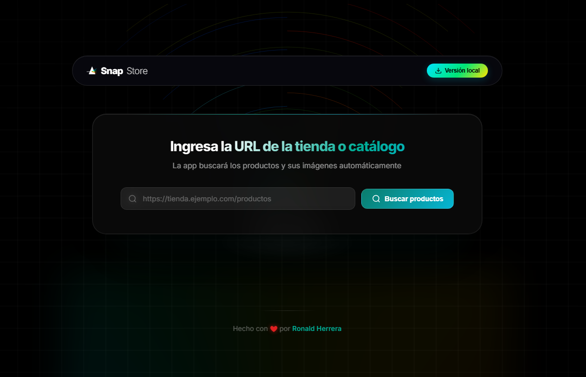

EL CONCEPTO
SnapStore resuelve el cuello de botella de la recopilación manual de imágenes en el comercio electrónico. En lugar de guardar una a una las fotos de productos, SnapStore utiliza motores de navegación automatizada para extraer, procesar y empaquetar catálogos completos en segundos, manteniendo la máxima calidad y estructura original.
ESPECIFICACIONES
- MOTOR CORE: Puppeteer Core + Stealth Plugin (Navegación indetectable).
- ARQUITECTURA: Desktop App híbrida basada en Electron y Node.js.
- EXTRACCIÓN: Lógica adaptativa con Cheerio y selectores dinámicos.
- PROCESAMIENTO: Descarga asíncrona por lotes y empaquetado ZIP.
PROCESO
01. ANÁLISIS DOM
Investigación de estructuras y medidas anti-bot en plataformas líderes como Shopify o Inditex.
02. BACKEND ASÍNCROMO
Implementación de un servidor Express interno para gestionar procesos pesados sin bloquear la UI.
03. UI PRISMÁTICA
Diseño de una interfaz "Prism UI" minimalista y optimización de la velocidad de descarga masiva.
RESUMEN Y CONCLUSIÓN
SnapStore demuestra cómo el web scraping ético y la automatización pueden transformar tareas tediosas de horas en procesos automáticos de pocos segundos. Es una herramienta escalable que permite a los creadores de contenido y gestores de tiendas centrarse en la estrategia, no en la recolección manual de datos.
GALERÍA DE INTERFAZ

// Dashboard Principal: Buscador de productos

// Monitor de Descarga: Gestión de activos asíncrona